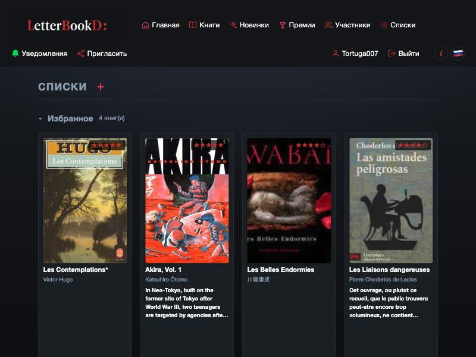

Списки
Зачем это нужно: Организовать свои чтения: избранное, к чтению, уже прочитанные книги, плюс любые тематические списки, которые ты хочешь создать (жанры, темы, читательские челленджи).

Как это устроено
Три системных списка всегда на месте: «Избранное» (сердце), «К чтению» (очередь) и «Все мои книги» (всё, что ты сохранил). За ними идут твои личные списки. Каждый список сворачивается и разворачивается через свой шеврон, показывает число книг и выводит книги обложками с оценками в виде звёзд поверх. Кнопка «+» вверху создаёт новый список.
Цепочки действий
Каждая строка — это триггер в интерфейсе, модалка или форма, которые он открывает, и результат.
| Триггер | Модалка / Поля | Эффект |
|---|---|---|
| Кнопка «+» рядом с «Списки» | Поле «Название» (до 120 символов). | Создаёт новый пустой список; он сразу появляется в левой колонке, готовый к заполнению из карточек книг. |
| Шеврон перед списком | — | Открывает или закрывает список. Одновременно может быть открыт только один список (name='lists-acc'). |
| Значок корзины рядом с книгой (в списке) | Подтверждающая POST-форма. | Убирает книгу из списка. Книга остаётся в каталоге и в других твоих списках. |
| Значок корзины у личного списка | Подтверждающая POST-форма. | Удаляет список целиком (сами книги сохраняются, исчезает только список). Системные списки удалить нельзя. |